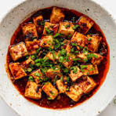

Mapo Tofu

Mapo Tofu
Mapo Tofu is a classic Sichuan dish known for its bold and spicy flavors. It features silky tofu cubes in a flavorful and numbingly spicy sauce, typically made with minced meat, fermented black beans, and Sichuan peppercorns. The dish has a rich history and is loved for its unique combination of textures and intense taste.
Ingredients:
- 1 block of firm tofu, cubed
- 200g ground pork or beef
- 2 tablespoons soy sauce
- 1 tablespoon Sichuan peppercorns
Cooking Step by Step
- Prepare Ingredients: Cube the tofu, mince the meat, and gather the remaining ingredients.
- Cooking Process: Brown the meat, add the chili bean paste and tofu, stir gently to avoid breaking the tofu, and simmer until the sauce thickens.
- Serve: Sprinkle Sichuan peppercorns on top, and serve hot with steamed rice.